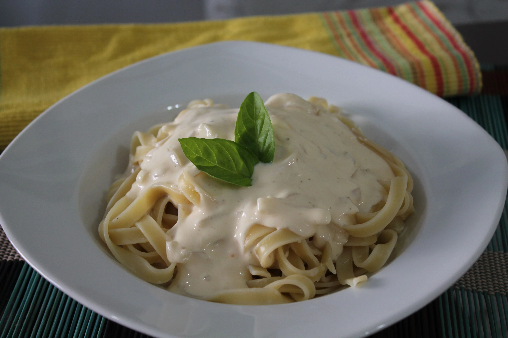

Macarrão molho branco

Ingredientes
- 500 g de macarrão a sua escolha;
- Água o bastante para cozinhá-lo;
- 1 cebola pequena picada;
- 1 colher de margarina
- 1 caixinha de creme de leite
- 1/2 litro de leite
- 1 colher de sopa cheia de maizena
- 1 xícara de queijo ralado (de preferência roquefort ou parmesão)
- 1 colher de sobremesa rasa de sal
- 2 pés de brócolis japonês cozidos no vapor
Modo de preparo
- Coloque a margarina na panela e, quando estiver totalmente derretida acrescente a cebola, o sal e a pimenta.
- Quando a cebola estiver transparente, acrescente o creme de leite.
- Deixe cozinhar por 1 ou 2 minutos, para pegar o gosto.
- Coloque o leite (com a maizena dissolvida, para não empelotar).
- Mexa até o molho começar a ter uma consistência mais firme.
- Quando o molho estiver com forma mais firme, desligue o fogo e acrescente o queijo, mexendo bem, para ele não grudar. O molho está pronto.
- Cozinhe o brócolis no vapor.
|